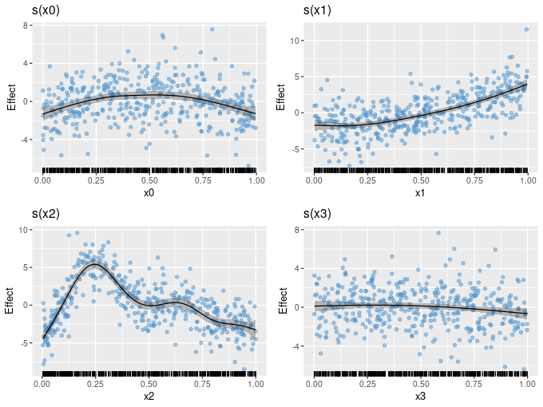
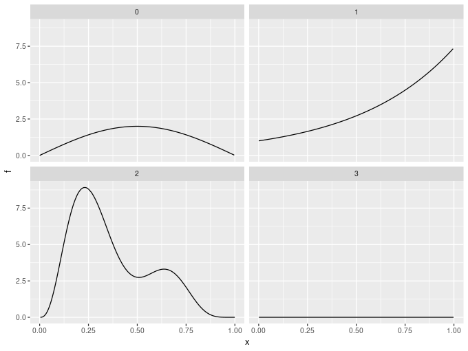
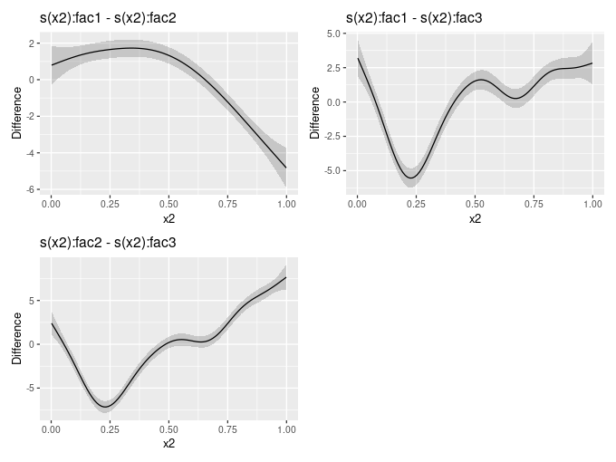

gratia 0.4.1 released
After a slight snafu related to the 1.0.0 release of dplyr, a new version of gratia is out and available on CRAN. This release brings a number of new features, including differences of smooths, partial residuals on partial plots of univariate smooths, and a number of utility functions, while under the hood gratia works for a wider range of models that can be fitted by mgcv.
Partial residuals
The draw() method for gam() and related models produces partial effects plots. plot.gam() has long had the ability to add partial residuals to partial plots of univariate smooths, and with the latest release draw() can now do so too.
df1 <- data_sim("eg1", n = 400, seed = 42)
m1 <- gam(y ~ s(x0) + s(x1) + s(x2) + s(x3), data = df1, method = "REML")
draw(m1, residuals = TRUE)
If the estimated functions have the correct degree of wiggliness, the partial residuals should be approximately uniformly distributed about the estimated smooth.
Simulating data
The previous example demonstrated another new feature of the latest release; data_sim(). This is a reimplementation of mgcv::gamSim(), which is used to simulate data for testing GAMs. Data can be simulated from several widely-used functions that illustrate the power an capabilities of estimating smooth functions using penalised splines.
data_sim() returns simulated data in a tidy fashion and all the various example test data sets return consistently. Also, data from the example functions can be simulated from a number of probability distributions — currently the Gaussian, Poisson, and Bernoulli distributions are supported, but future versions will offer a wider range to simulate from.
For example, the response data modelled above came from the following four functions used by Gu and Wahba
df1 %>% mutate(id = seq_len(nrow(df1))) %>%
select(id, x0:x3, f0:f3) %>%
pivot_longer(x0:f3, names_sep = 1, names_to = c("var", "fun")) %>%
pivot_wider(names_from = var, values_from = value) %>%
ggplot(aes(x = x, y = f)) +
geom_line() +
facet_wrap(~ fun)
Difference smooths
When GAMs contain smooth-factor interactions, we often want to compare smooths between levels of the factor to determine how the smooth effects vary between groups. The new release contains a function difference_smooths() that implements this idea.
The mgcv example for factor-smooth interactions using the by mechanism can be simulated from using data_sim(). The model fitted to the data contains a smooth of covariate x1 and a smooth of x2 for each level of the factor fac. Note that we need the parametric effect for fac as the by smooths are all centred about 0; the parametric term models the different group means.
df <- data_sim("eg4", n = 1000, seed = 42)
m2 <- gam(y ~ fac + s(x2, by = fac) + s(x0), data = df, method = "REML")difference_smooths() returns differences between the smooth functions for all pairs of the levels of fac, plus a credible interval for the difference.
sm_diffs <- difference_smooths(m2, smooth = "s(x2)")
sm_diffs# A tibble: 300 x 9
smooth by level_1 level_2 diff se lower upper x2
<chr> <chr> <chr> <chr> <dbl> <dbl> <dbl> <dbl> <dbl>
1 s(x2) fac 1 2 0.797 0.536 -0.253 1.85 0.00170
2 s(x2) fac 1 2 0.846 0.500 -0.135 1.83 0.0118
3 s(x2) fac 1 2 0.896 0.467 -0.0190 1.81 0.0219
4 s(x2) fac 1 2 0.945 0.435 0.0929 1.80 0.0319
5 s(x2) fac 1 2 0.994 0.405 0.200 1.79 0.0420
6 s(x2) fac 1 2 1.04 0.378 0.302 1.78 0.0521
7 s(x2) fac 1 2 1.09 0.354 0.397 1.78 0.0622
8 s(x2) fac 1 2 1.14 0.332 0.485 1.79 0.0722
9 s(x2) fac 1 2 1.18 0.314 0.566 1.80 0.0823
10 s(x2) fac 1 2 1.22 0.298 0.641 1.81 0.0924
# … with 290 more rows
There is a draw() method for objects returned by difference_smooths(), which will plot the pairwise differences
draw(sm_diffs)
Note that these differences exclude differences in the group means and the differences between smooths are computed on the scale of the link function. A future version will allow for differences that include the group means.
Fitted values and residuals utility functions
Two new utility functions are in the current release, add_fitted() and add_residuals() add fitted values and residuals to a data frame of observations used to fit a model.
df1 %>% add_fitted(m1, value = ".fitted") %>%
add_residuals(m1, value = ".resid")# A tibble: 400 x 12
y x0 x1 x2 x3 f f0 f1 f2 f3 .fitted .resid
<dbl> <dbl> <dbl> <dbl> <dbl> <dbl> <dbl> <dbl> <dbl> <dbl> <dbl> <dbl>
1 2.99 0.915 0.0227 0.909 0.402 1.62 0.529 1.05 0.0397 0 2.57 0.419
2 4.70 0.937 0.513 0.900 0.432 3.25 0.393 2.79 0.0630 0 3.91 0.788
3 13.9 0.286 0.631 0.192 0.664 13.5 1.57 3.53 8.41 0 12.9 1.03
4 5.71 0.830 0.419 0.532 0.182 6.12 1.02 2.31 2.79 0 6.57 -0.859
5 7.63 0.642 0.879 0.522 0.838 10.4 1.80 5.80 2.76 0 10.3 -2.67
6 9.80 0.519 0.108 0.160 0.917 10.4 2.00 1.24 7.18 0 9.23 0.571
7 10.4 0.737 0.980 0.520 0.798 11.3 1.47 7.10 2.75 0 11.2 -0.754
8 12.8 0.135 0.265 0.225 0.503 11.4 0.821 1.70 8.90 0 11.0 1.77
9 13.8 0.657 0.0843 0.282 0.254 11.1 1.76 1.18 8.20 0 11.5 2.28
10 7.51 0.705 0.386 0.504 0.667 6.50 1.60 2.16 2.74 0 6.71 0.792
# … with 390 more rows
Other changes
This release contains a number of other less-visible changes. gratia now handles models fitted by gamm4::gamm4() in more functions than before, while the utility functions link() and inv_link() now work for all families in mgcv, including the general family functions and those used for fitting location scale models.